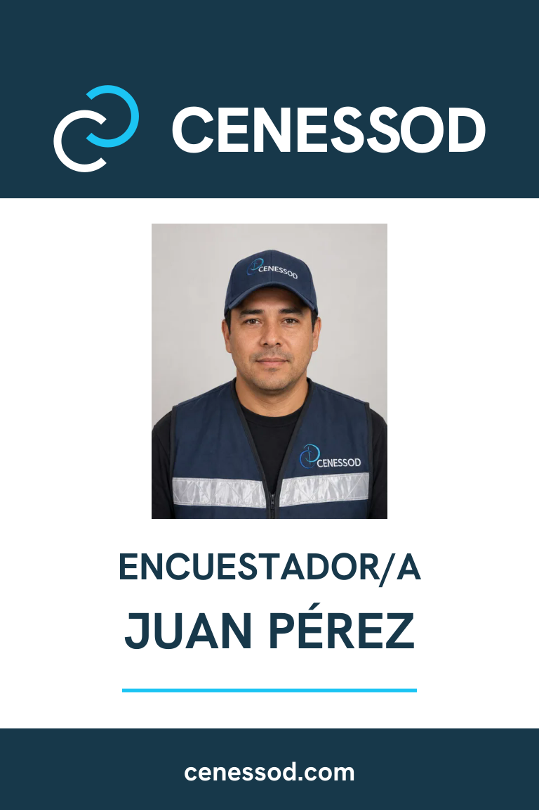
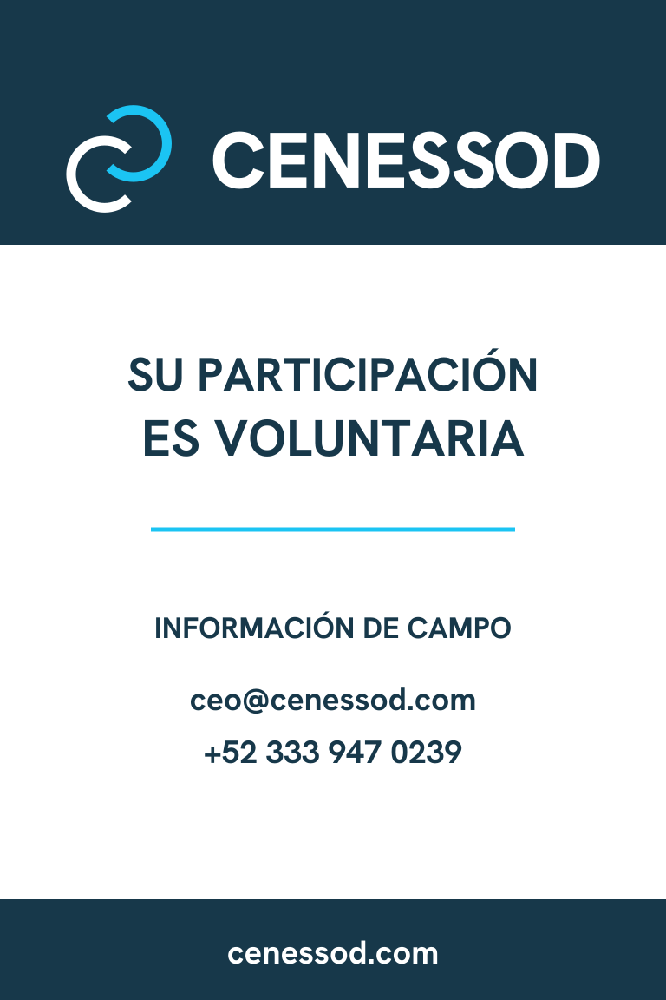
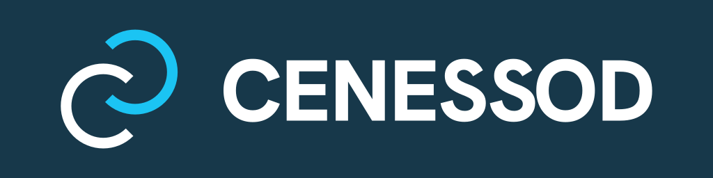

Aplicación de identidad
Identidad en campo.
Gafete ilustrativo de Juan Pérez, personaje ficticio. Consulta ambas caras sin necesidad de arrastrar.



Aplicación de identidad
Gafete ilustrativo de Juan Pérez, personaje ficticio. Consulta ambas caras sin necesidad de arrastrar.


